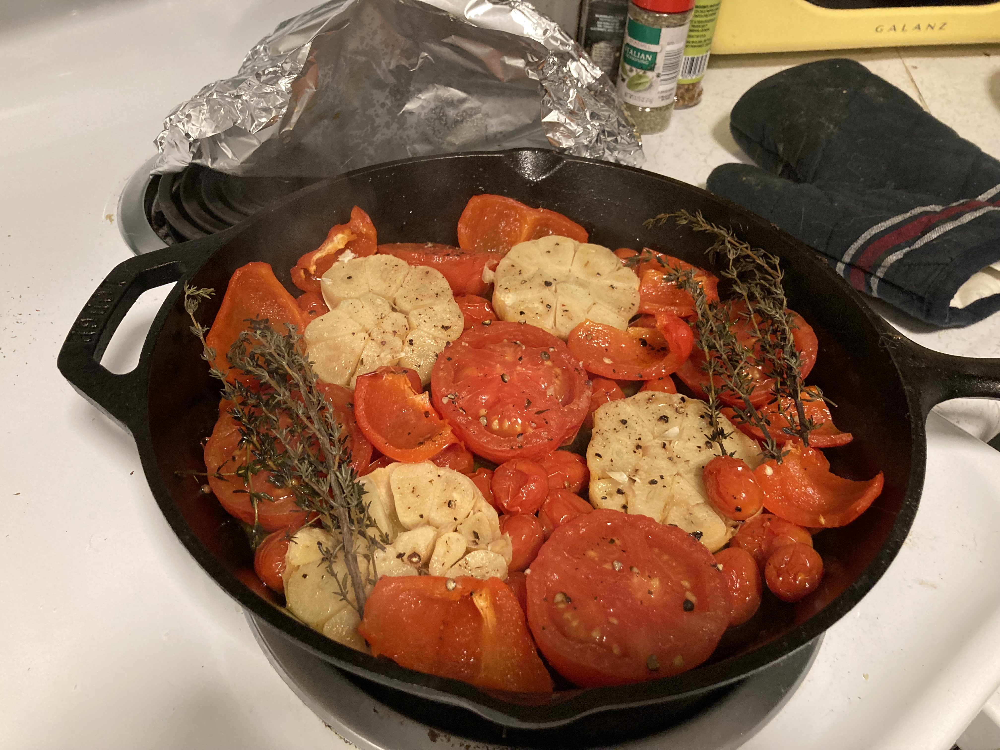
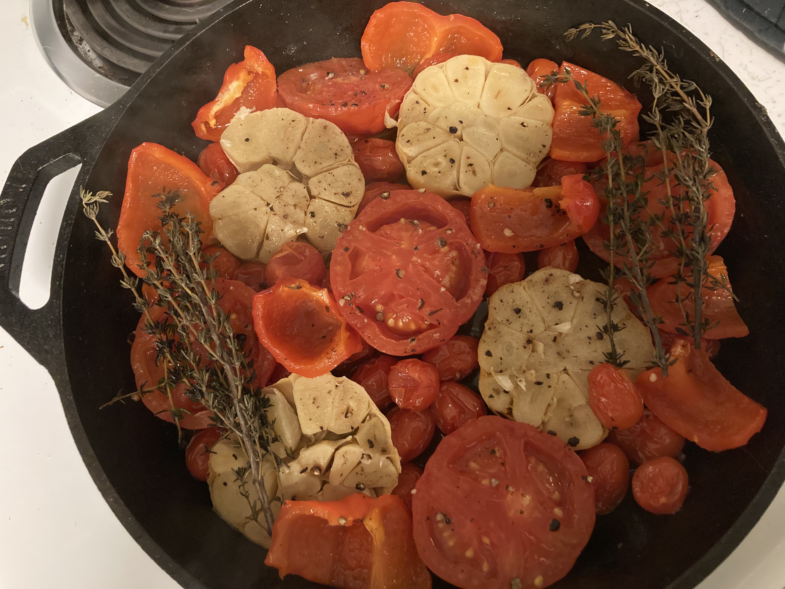

Roasted Tomato Garlic Pasta Sauce

Pasta Sauce with Roasted Veggies
Making your own glorious pasta sauce is not as complicated as you might think!
Simply pick out some vegetables that go together and be patient while your kitchen appliances
do most of the work. You can go pretty crazy here but I usually like roma tomatoes, red peppers, garlic, and basil.
Ingredients
- Tomatoes, as many as your heart desires
- Garlic, two heads
- Italian herbs
- Red Peppers or any amount of other vegetables about equal to your tomato quantity
- Olive oil
Steps
- Preheat oven to 425.
- Chop up vegetables, they can stay fairly large.
- Chop garlic heads in half.
- If using fresh herbs cut them to fit a skillet.
- Line everything up in your skillet and drizzle with olive oil.
- Bake for about 25 minutes.
- Let everything cool, then blend in food processor to desired texture.
- Return to skillet on low, adding heavy cream until it looks like a nice deep shade of orange.

Home